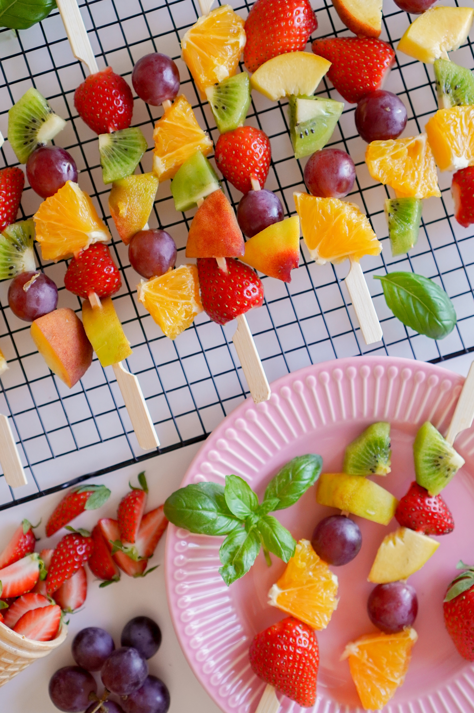

Fruit salad

Would you like something fresh and delicious? You should try Fruit salad.
The perfect fruit salad for a backyard bbq or any occasion. There are never leftovers! This is one of my favorite fruit salad recipes, as I think the sauce really makes it. This salad is tastier the longer you can let it soak in its juices. I prefer 3 to 4 hours in the refrigerator before I serve it. Enjoy.
Ingredients
- ⅔ cup fresh orange juice
- ⅓ cup fresh lemon juice
- ⅓ cup packed brown sugar
- 1 teaspoon vanilla extract
- pineapple, strawberry, kiwi, banana, orange, grapes, blueberries
Steps
- Bring orange juice, lemon juice and brown sugar to a boil in a saucepan over medium-high heat. Reduce heat to medium-low, and simmer until slightly thickened, about 5 minutes. Remove from heat, and stir in vanilla extract. Set aside to cool.
- Layer the fruit in a large, clear glass bowl in this order: pineapple, strawberries, kiwi fruit, bananas, oranges, grapes, and blueberries. Pour the cooled sauce over the fruit. Cover and refrigerate for 3 to 4 hours before serving.
back to homepage